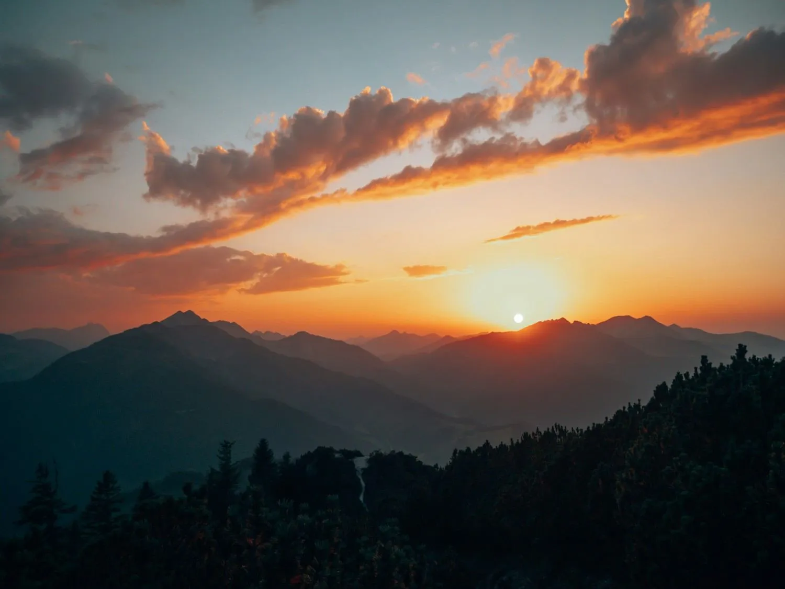
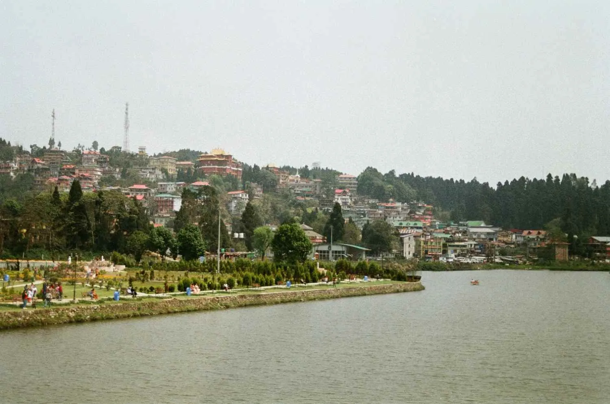
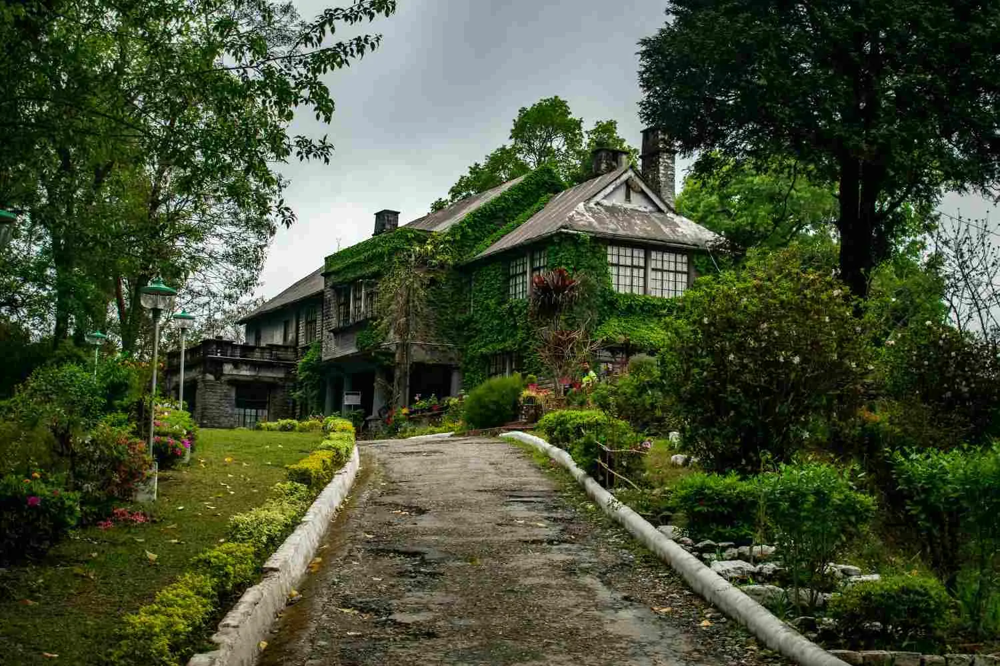
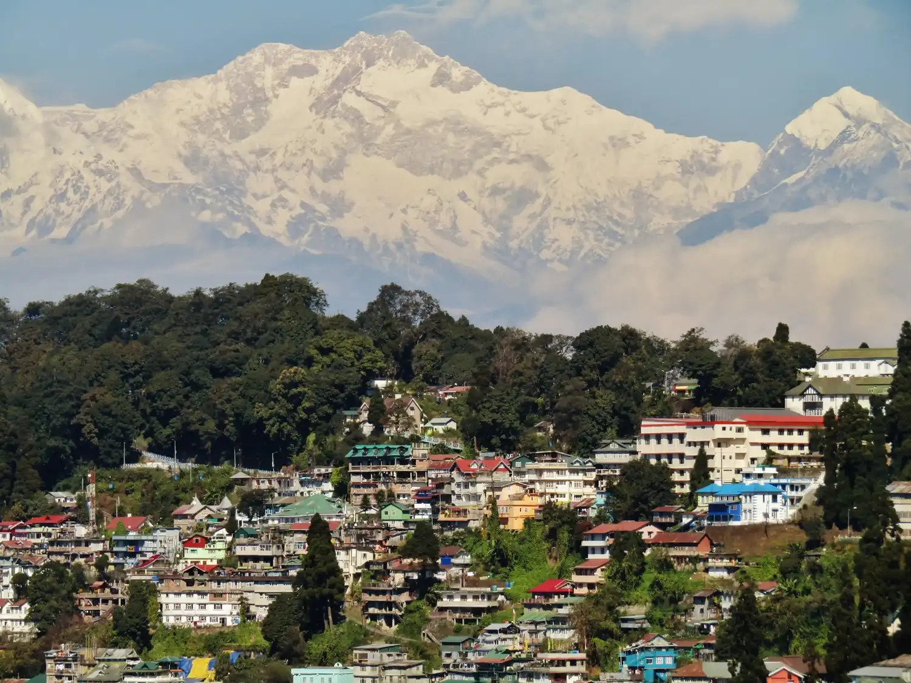

Darjeeling & Kalimpong · −19%
DARJEELING(via Kalimpong) 4N-5D
Kalimpong - The Orchid Paradise
Overview
Experience the breathtaking beauty of the Eastern Himalayas on this memorable 4 Nights & 5 Days tour covering Kalimpong, Darjeeling and Mirik. Begin your journey in the peaceful hill town of Kalimpong, known for its scenic valleys, monasteries and panoramic mountain views. Continue to the charming Darjeeling, where you can enjoy the famous Tiger Hill sunrise, Batasia Loop, Ghoom Monastery, Himalayan Mountaineering Institute, tea gardens and Mall Road. The journey then takes you to the serene hill destination of Mirik, surrounded by lush tea gardens, forests and beautiful mountain scenery, with the picturesque Mirik Lake as a major attraction. This tour offers a perfect combination of nature, sightseeing, mountain views, tea gardens, local culture and relaxation, making it an ideal getaway for families, couples and nature lovers seeking an unforgettable Himalayan holiday.
Journey highlights
- Deolo Hill Sightseeing
- Durpin Dara Hill Visit
- Monastery Visit
- Scenic Mountain Views Tiger Hill Sunrise
- Ghoom Monastery
- Batasia Loop
- Tea Garden Visit
- Himalayan Mountaineering Institute Mall Road & Chowrasta
- Mirik Lake Sightseeing
- Tea Garden Visit
- Boating / Horse Riding (optional) Nature Walk & Photography
- Departure
- Scenic Drive to NJP/Bagdogra
Day by day
The itinerary
-
Day 1
ARRIVAL AT IXB/NJP – TRANSFER TO KALIMPONG
Arrive at Bagdogra Airport (IXB) / New Jalpaiguri Railway Station (NJP) and proceed towards Kalimpong. Enjoy the scenic drive through the beautiful Himalayan foothills, tea gardens and winding mountain roads. On arrival, check in to the hotel and relax. Evening is free to explore the local market or enjoy the peaceful surroundings.
Airport/Railway Pickup | Himalayan Views | Scenic Mountain Drive | Hotel Check-in | Local Market
-
Day 2
KALIMPONG SIGHTSEEING – TRANSFER TO DARJEELING
After breakfast, enjoy Kalimpong sightseeing covering Deolo Hill, Durpin Dara Hill, Zang Dhok Palri Phodang Monastery, Pine View Nursery and local attractions. Enjoy spectacular views of the surrounding mountains and valleys. Later, proceed towards Darjeeling through beautiful Himalayan landscapes. On arrival, check in to your hotel and relax.
Deolo Hill | Durpin Dara Viewpoint | Monastery Visit | Pine View Nursery | Scenic Transfer to Darjeeling
-
Day 3
DARJEELING SUNRISE & FULL-DAY SIGHTSEEING
Early morning, proceed to Tiger Hill to witness the spectacular sunrise over the Himalayan peaks. On the way back, visit Ghoom Monastery and Batasia Loop. After breakfast, continue Darjeeling sightseeing with visits to the Himalayan Mountaineering Institute, Padmaja Naidu Himalayan Zoological Park, Tenzing Rock, Tea Garden and Tibetan Refugee Self-Help Centre (subject to opening days). In the evening, enjoy a relaxing walk along Darjeeling Mall Road/Chowrasta.
Tiger Hill Sunrise | Batasia Loop | Ghoom Monastery | Himalayan Mountaineering Institute | Himalayan Zoo | Tea Garden | Mall Road
-
Day 3
DARJEELING SUNRISE & FULL-DAY SIGHTSEEING
Early morning, proceed to Tiger Hill to witness the spectacular sunrise over the Himalayan peaks. On the way back, visit Ghoom Monastery and Batasia Loop. After breakfast, continue Darjeeling sightseeing with visits to the Himalayan Mountaineering Institute, Padmaja Naidu Himalayan Zoological Park, Tenzing Rock, Tea Garden and Tibetan Refugee Self-Help Centre (subject to opening days). In the evening, enjoy a relaxing walk along Darjeeling Mall Road/Chowrasta.
Tiger Hill Sunrise | Batasia Loop | Ghoom Monastery | Himalayan Mountaineering Institute | Himalayan Zoo | Tea Garden | Mall Road
-
Day 4
DARJEELING – MIRIK EXCURSION & TRANSFER
After breakfast, check out and proceed towards Mirik, enjoying the scenic route through lush tea gardens, forests and mountain villages. On arrival, visit the beautiful Mirik Lake and enjoy the peaceful surroundings. You can also explore the lakeside area and nearby viewpoints. Spend the evening relaxing in the serene atmosphere of Mirik and stay overnight at the hotel.
Scenic Mountain Drive | Tea Gardens | Mirik Lake | Pine & Forest Views | Nature Photography | Peaceful Hill Experience
-
Day 5
MIRIK – IXB/NJP DEPARTURE
After breakfast, check out from the hotel and proceed towards Bagdogra Airport (IXB) / NJP Railway Station for your onward journey. Your memorable Kalimpong–Darjeeling–Mirik Himalayan holiday comes to an end with beautiful memories of the mountains, tea gardens and scenic landscapes.
Hotel Checkout | Scenic Journey | Last Himalayan Views | IXB Airport / NJP Drop
Included
- Reserved vehicle for Transfer & Sightseeing.
- All sightseeing as per the Tour Itinerary.
- Nights stay in Hotel
- Accommodation in Hotel What's Excluded
- Any personal expenses.
- All Taxes and Permits etc. for Darjeeling Sikkim & Bhutan.
- Any other not mentioned in includes Para
Not included
- Any personal expenses.
- All Taxes and Permits etc. for Darjeeling Sikkim & Bhutan.
- Any other not mentioned in includes Para
Gallery
Scenes from the route





Reserve this journey